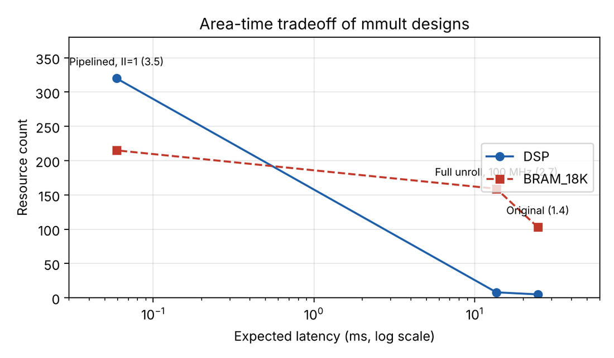
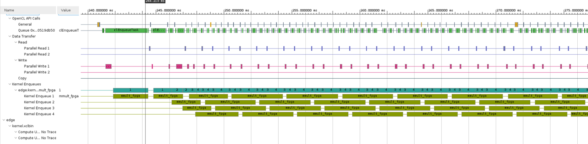

Acceleration on an Ultra96
Speeding up real workloads on a Zynq UltraScale+ board, from multicore and NEON SIMD on its ARM cores to custom FPGA kernels in Vitis HLS. All numbers were measured on the board.
Multicore and SIMD
A video compression pipeline (scale, filter, differentiate, compress) split into a balanced two-core pipeline:
With NEON, the filters reached 8.0× and 9.7×, at or above the 8-lane ideal, once the coefficients were stored as bytes so the vector unit could skip widening every pixel.
An HLS matrix multiply
| Design | Latency | DSP |
|---|---|---|
| Original | 24.66 ms | 5 |
| Unrolled | 13.64 ms | 8 |
| Pipelined, II = 1 | 0.059 ms | 320 |
Unrolling barely helped, because floating-point adds can't be reordered. Pipelining the outer loop and partitioning the buffers so 64 values could be read per cycle got it to II = 1.

The full system
A larger streaming matrix multiply, tuned with dataflow inside the kernel, an out-of-order queue to overlap transfers, and a second compute unit. Device time against the CPU:
